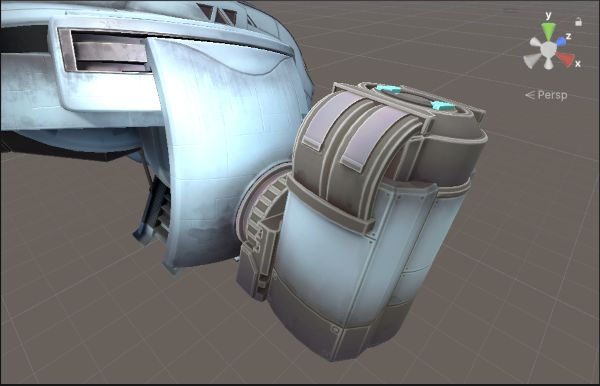
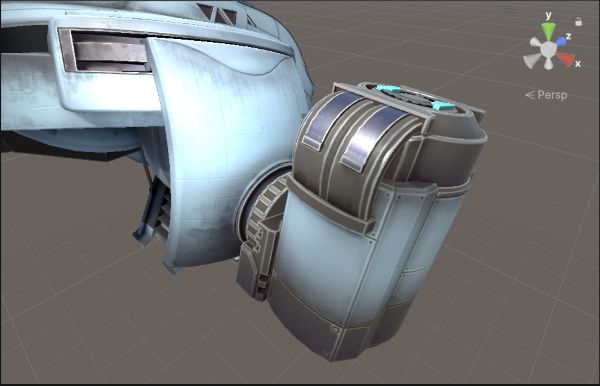
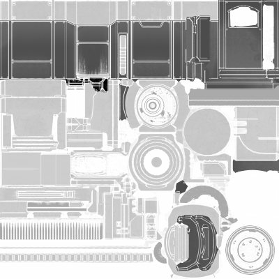
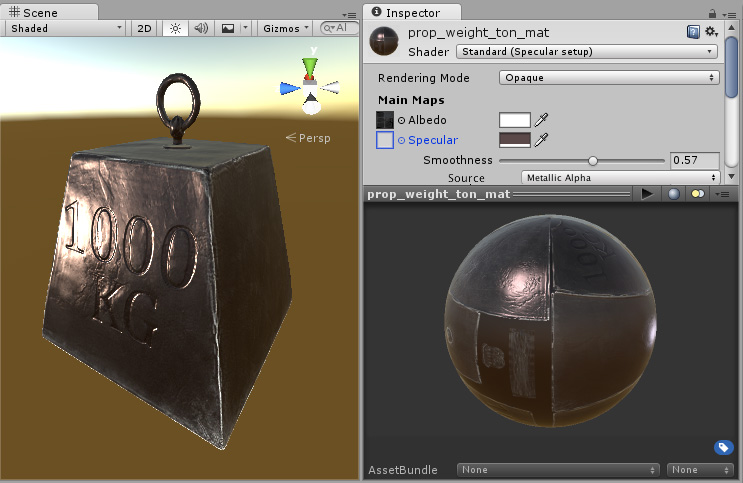
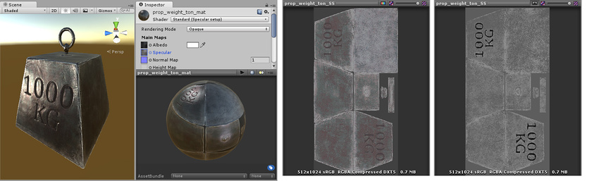

Reference for metallic and specular values of real surfaces
Configure reflections in prebuilt shaders
To configure reflections in a prebuilt shaderA program that runs on the GPU. More info See in Glossary, use the Metallic or Specular property and the Smoothness property.
If your project uses the Universal Render PipelineA series of operations that take the contents of a Scene, and displays them on a screen. Unity lets you choose from pre-built render pipelines, or write your own. More info See in Glossary (URP), set Workflow Mode to Metallic or Specular in the Surface Options section.
If your project uses the Built-In Render Pipeline, set Shader to Standard to use the metallic workflow, or Standard (Specular setup) to use the specular workflow.
To make a material metallic or non-metallic, set the Metallic value to 1 or 0. Values between 0 and 1 blend the two results.
To control the blurriness or sharpness of the reflection, adjust the Smoothness property.
To make different parts of a material more or less metallic, add a texture map to control the Metallic and Smoothness properties. For example, if you have a clothing texture with both non-metallic fabric and metallic zips and buckles. Use the channels as follows:
Red channel: Metallic values
Green channel: Unused
Blue channel: Unused
Alpha channel: Smoothness values

A spaceship with a color texture, but no texture for metallic and smoothness. The whole object has a single Metallic and Smoothness value, and a flat appearance.

The same spaceship model with a metallic map applied. Part of the spaceship now has a high Metallic value and appears more reflective.

The metallic map. The lighter areas are values nearer 1 for metal surfaces, and the mid to low greys are values nearer 0 for non-metal surfaces.
To set the color and intensity of reflections, set the Specular color. A black specular colorThe color of a specular highlight. See in Glossary means no reflections, while a white specular color means full reflection.
To control the blurriness or sharpness of the reflection, adjust the Smoothness property.
To make different parts of a model or texture appear more or less reflective, add a texture map to control the Specular and Smoothness properties. For example, if you have a clothing texture with both non-metallic fabric and shiny plastic buttons. Use the channels as follows:
Red, green, and blue channels: Specular color values
Alpha channel: Smoothness values

A 1000kg weight with a strong specular reflection from a directional light. The whole object has a single Specular and Smoothness value, and a flat appearance.

The same model, but with a specular map assigned, instead of using a constant value. This allows the specularity to vary across the surface of the model. Notice the edges have a higher specular effect than the centre, there are some subtle colour responses to the light, and the area inside the lettering no longer has specular highlights.